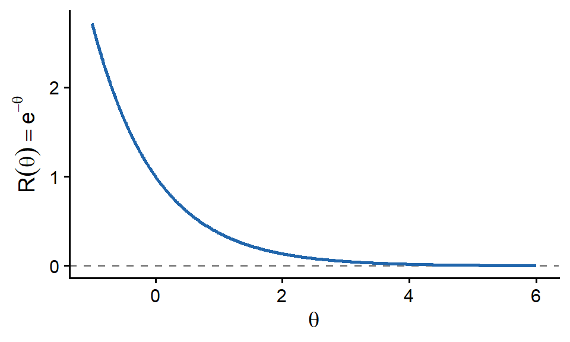
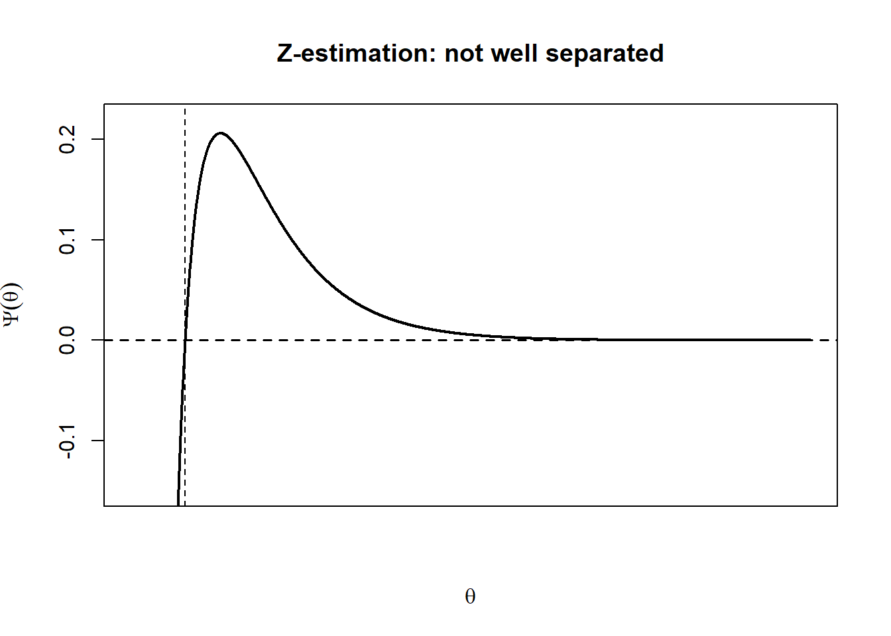
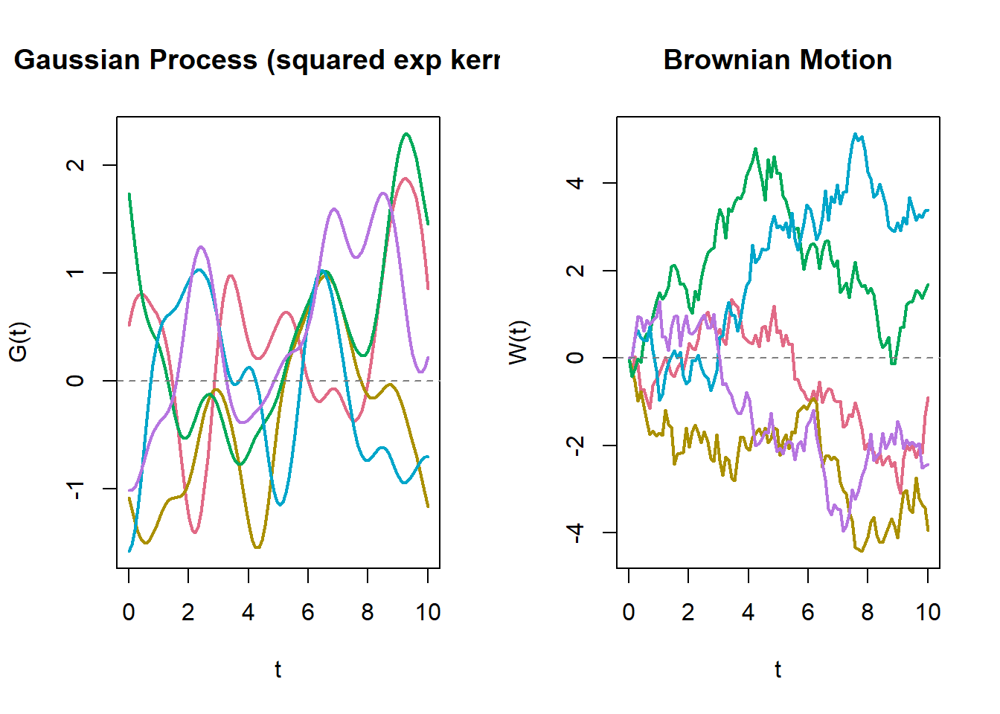

Overview of Modern Math Stat
“All models are wrong, but some are useful.” — George Box
Many ideas in advanced mathematical statistics extend familiar methods to larger statistical models \(\mathcal P\). Broadly, the goal is to understand how relaxing assumptions affects estimation, inference and interpretation. Intuitively, a model with stronger assumptions may make estimation and interpretation easier, but those assumptions may be harder to justify. With this in mind, George Box’s famous quote should be a mantra for estimation and inference
Two widely used frameworks for studying estimation in general statistical models are \(M\)-estimation and \(Z\)-estimation. Both organize estimators according to how they are constructed:
An \(M\)-estimator is defined through the optimization of an empirical objective function. Examples include maximum likelihood estimators, least-squares estimators, and many penalized estimators used in high-dimensional problems.
A \(Z\)-estimator is defined as a solution, or approximate solution, to an empirical estimating equation. Examples include estimators obtained from likelihood score equations, generalized estimating equations (GEE), and just-identified method-of-moments equations.
The two frameworks are closely connected, as many \(Z\)-estimating equations arise as first-order optimality conditions for \(M\)-estimators. However, they are not interchangeable: \(M\)-estimation naturally accommodates nonsmooth objectives, while \(Z\)-estimation accommodates estimating equations that need not arise as derivatives of an objective function.
Below, we develop the general theories of \(M\)- and \(Z\)-estimation, which formalize loss-based and estimating-equation-based estimation, respectively. In particular, we will study the conditions under which the empirical estimators converge to their population targets (consistency \(\hat \theta_n - \theta_0 = o_P(1)\)) and how their sampling distributions can be asymptotically approximated (CLT). These frameworks will then provide a natural route to asymptotic linearization, sandwich variance estimation, influence functions, bootstrap, semiparametric theory, GMM and GEE.
M-Estimation: Generalizing Estimation via Minimizing Risk
A useful way to formulate estimation is to specify a loss function that evaluates how well a candidate model or decision rule performs. Its population expectation is the risk, and a minimizer of this risk over the candidate class defines a population target, or estimand. Minimizing the corresponding empirical risk is the loss-based formulation of M-estimation.
Let
- \(Z\) denote a generic observation from the data-generating distribution \(P\), with observed data \(Z_1,\ldots,Z_n\);
- \(g\in\mathcal G\) denote a candidate function in a function class \(\mathcal G\);
- \(L(g,Z)\in\mathbb R\) denote the loss incurred by choosing \(g\) when observing \(Z\).
Even when \(g\) is vector-valued or otherwise high-dimensional, the loss and its population expectation are scalar criteria. We assume the expectations below are well-defined and finite.
Maximizing a criterion and minimizing its negative are equivalent formulations of M-estimation.
Before asking whether an estimator is consistent or asymptotically normal, we must clarify what it targets and whether its definition determines a valid estimator. Writing an optimizer or root set does not establish that it is nonempty, contains only one element, or can be computed.
Specifying the scientific estimand and connecting it to the population objective require problem-specific arguments. The discussion below focuses on existence, uniqueness, and separation, and how these properties support consistency.
Estimand Existence: Does the target exist?
A population criterion may have an infimum without attaining it.
More generally,
On a nonempty compact parameter space (like an interval in \(\mathbb R\)) continuity of the objective on the whole parameter space is sufficient to guarantee that the minimum is attained (though it need not be unique \(\theta_0\) and could be a larger set \(\Theta_0\))
On an unbounded parameter space such as \(\mathbb R^p\), coercivity prevents a minimizing sequence from escaping to infinity. A criterion \(R\) is coercive if
\[ R(\theta)\longrightarrow\infty \qquad\text{as }\|\theta\|\longrightarrow\infty. \]
This means that sufficiently distant parameter values have arbitrarily large risk, regardless of the direction in which we move. Consequently, searching farther and farther from the origin cannot keep improving the criterion.
If \(R\) is also continuous, it attains a global minimum on \(\mathbb R^p\). To see why, choose any reference point \(\theta^\ast\). Coercivity guarantees a radius \(B>\|\theta^\ast\|\) such that
\[ \|\theta\|>B \quad\Longrightarrow\quad R(\theta)>R(\theta^\ast). \]
Therefore, no point outside the closed ball
\[ K=\{\theta\in\mathbb R^p:\|\theta\|\le B\} \]
can improve on \(\theta^\ast\). Since \(K\) is compact and \(R\) is continuous, the extreme value theorem guarantees a minimizer \(\theta_0\in K\). Moreover,
\[ R(\theta_0)\le R(\theta^\ast)<R(\theta) \qquad\text{for every }\theta\notin K, \]
so \(\theta_0\) is a global minimizer over all of \(\mathbb R^p\).
Thus, coercivity effectively reduces optimization over an unbounded space to optimization over a compact set. It guarantees existence together with continuity, but not uniqueness. For example, \(R(\theta)=(\theta^2-1)^2\) is continuous and coercive, yet has two minimizers, \(\theta=\pm1\).
Coercivity is sufficient, not necessary: \(R(\theta)=\theta^2/(1+\theta^2)\) attains its minimum at zero even though it approaches \(1\), rather than infinity, as \(|\theta|\to\infty\)
Population Targets: Uniqueness, Separation, and Consistency
Even when a population solution exists, it may not be unique. A criterion can have several global minimizers, and an estimating equation can have several roots.
Strict convexity on a convex parameter space guarantees at most one minimizer, but does not itself guarantee existence. For estimating equations, uniqueness requires an argument about the roots of the population map \(\Psi(\theta)=P\psi_\theta\).
For example, under \(E[Y^2]<\infty\) and \(E[\|X\|^2]<\infty\), the population least-squares normal equations are
\[ E[XX^\top]\beta=E[XY]. \]
If \(E[XX^\top]\) is positive definite, the coefficient target is unique:
\[ \beta_0=E[XX^\top]^{-1}E[XY]. \]
If this matrix is singular, different coefficient vectors can produce the same linear predictor almost surely. Thus the coefficient representation can be nonunique even though the population least-squares predictor is unique up to almost-sure equality.
When uniqueness fails, we may instead target the solution set \(\Theta_0\), a selected element, or a feature shared by its elements.
Suppose now that \(\Theta\) is equipped with a metric \(d\) and \(R\) has a unique minimizer \(\theta_0\). Uniqueness means
\[ R(\theta)>R(\theta_0) \qquad\text{for every }\theta\ne\theta_0. \]
For consistency, we often use the stronger condition that \(\theta_0\) is well-separated:
\[ \boxed{ \inf_{\theta\in\Theta:\,d(\theta,\theta_0)\ge\varepsilon} \{R(\theta)-R(\theta_0)\}>0 \qquad\text{for every }\varepsilon>0. } \]
Uniqueness says that each incorrect parameter has greater risk. Separation says that all parameters at least a fixed distance from the target have risks bounded uniformly away from the minimum. It therefore ensures that nearly minimizing population risk places the parameter near the target.
Uniqueness alone does not ensure this. For example,
\[ R(\theta)=\frac{\theta^2}{1+\theta^4}, \qquad \theta\in\mathbb R, \]
has the unique minimizer \(\theta_0=0\), but \(R(\theta)\to0\) as \(|\theta|\to\infty\). Parameters arbitrarily far from zero can therefore achieve risk arbitrarily close to the minimum.
On a compact parameter space, continuity of \(R\) and uniqueness of its minimizer imply separation. Outside such settings, uniqueness alone is insufficient.
The same reasoning extends to a nonempty minimizer set \(\Theta_0\). Define
\[ d(\theta,\Theta_0) \coloneqq \inf_{\vartheta\in\Theta_0}d(\theta,\vartheta). \]
If, for every \(\varepsilon>0\),
\[ \inf_{\theta\in\Theta:\,d(\theta,\Theta_0)\ge\varepsilon}R(\theta) > \inf_{\theta\in\Theta}R(\theta), \]
then uniform convergence and approximate empirical minimization yield
\[ d(\widehat\theta_n,\Theta_0)\xrightarrow{P}0. \]
This establishes proximity to the target set, not necessarily convergence to a particular member or consistent estimation of the entire set.
For Z-estimation with a unique population root \(\theta_0\), the analogous separation condition is
\[ \inf_{\theta\in\Theta:\,d(\theta,\theta_0)\ge\varepsilon} \|\Psi(\theta)\|>0 \qquad\text{for every }\varepsilon>0. \]
If the empirical map converges uniformly and the estimator approximately solves the empirical equation,
\[ \sup_{\theta\in\Theta}\|\Psi_n(\theta)-\Psi(\theta)\| \xrightarrow{P}0, \qquad \|\Psi_n(\widehat\theta_n)\|=o_P(1), \]
then
\[ \|\Psi(\widehat\theta_n)\| \le \sup_{\theta\in\Theta}\|\Psi_n(\theta)-\Psi(\theta)\| +\|\Psi_n(\widehat\theta_n)\| =o_P(1). \]
Separation again converts a small population discrepancy into proximity to the target, giving \(d(\widehat\theta_n,\theta_0)\xrightarrow{P}0\).
Defining the Estimator: Existence, Selection, and Approximation
Population existence and empirical existence are separate questions. Even when the population target exists, a particular sample may yield an empirical criterion whose infimum is not attained or an estimating equation with no root.
Example: XKCD #2435, Constructing a mathematically valid estimator/statistic does not mean it estimates a meaningful target

There are many ways to summarize a distribution, including the arithmetic mean, geometric mean, and median. Each describes a different aspect of the distribution, and they need not agree.
The comic proposes an intentionally absurd solution: if you cannot decide which average to use, calculate all three and repeatedly average the results until they agree. Munroe calls this the geothmetic meandian.
For example, consider the observations
\[ x=(1,1,2,3,5). \]
The three summaries are
\[ \begin{aligned} \text{Arithmetic mean} &= 2.400,\\ \text{Geometric mean} &= 30^{1/5}\approx1.974,\\ \text{Median} &= 2.000. \end{aligned} \]
Now apply these same three summaries to the resulting triple \((2.400,1.974,2.000)\), and repeat. The three values eventually converge to approximately
\[ \boxed{\operatorname{GMDN}(1,1,2,3,5)\approx2.089.} \]
Although the resulting statistic is mathematically well-defined for positive observations, its construction does not explain what population quantity we are trying to estimate. The arithmetic mean, median, and geometric mean estimate different population functionals, each with its own interpretation.
This illustrates an important distinction: a statistic is simply a function of observed data, whereas an estimator is a statistic intended to estimate a specified population parameter (estimand). Inventing a complicated summary does not establish its statistical relevance or usefulness.
The empirical minimizer set \(\widehat\Theta_n\) depends on the sample. It may contain one minimizer, several minimizers, or none. When it is nonempty, defining a single estimator requires a selection rule,
\[ \widehat\theta_n\in\widehat\Theta_n. \]
The selection must be measurable as a function of the data so that probability statements about \(\widehat\theta_n\) are well-defined.
Exact optimization is often unnecessary. Even when the empirical infimum is not attained, we may be able to construct an approximate empirical minimizer satisfying
\[ R_n(\widehat\theta_n) \le \inf_{\theta\in\Theta}R_n(\theta)+r_n, \qquad r_n\ge0, \qquad r_n=o_P(1). \]
Similarly, an approximate empirical root may satisfy
\[ \|P_n\psi_{\widehat\theta_n}\|=o_P(1). \]
Neither approximation is automatically available: the empirical risk must permit a vanishing gap from its infimum, or the estimating equation must permit a vanishing residual.
These are distinct requirements. Even when \(\psi_\theta\) is the gradient of the loss, a small estimating-equation residual does not generally imply a small gap from the global minimum. The tolerances above can support consistency under suitable uniform convergence and population separation conditions; rates and limiting distributions generally require tighter control of the approximation error.
Empirical uniqueness is not necessary for consistency. Under these conditions, different measurable selections of empirical minimizers or roots can all approach the same population target.
General Consistency of M-estimators
After ensuring the estimand exists and is uniquely identifiable. The first asymptotic question for an \(M\)-estimator is generally consistency: does the empirical optimizer approach its population target as the sample size increases? Once consistency is established, differentiability and Taylor expansions of the corresponding Z-estimators provides a beautiful route to asymptotic linearity, normality, and “sandwich” variance estimation.
Suppose initially that the population criterion has a unique maximizer \(\theta_0\). Consistency means
\[ \forall\varepsilon>0,\qquad P\bigl(d(\hat\theta_n,\theta_0)>\varepsilon\bigr)\longrightarrow0, \]
or equivalently
\[ d(\hat\theta_n,\theta_0)\xrightarrow{P}0. \]
For each fixed \(\theta\), the law of large numbers may imply
\[ R_n(\theta)\xrightarrow{P}R(\theta). \]
However, pointwise convergence is not enough in general: the optimizer \(\hat\theta_n\) changes with the sample, and large deviations of \(M_n\) from \(M\) at data-dependent parameter values can move the optimizer far from \(\theta_0\). We therefore need a convergence condition that controls the criterion over relevant parameter values, as well as a condition identifying the maximizer of \(M\).
There are two additional complications:
The population maximizer need not be unique. In that case, the population target is the set
\[ \Theta_0=\arg\max_{\theta\in\Theta}R(\theta). \]
The empirical criterion may have multiple maximizers, or numerical optimization may produce only an approximate maximizer.
The argmax consistency theorem addresses these issues.
The logic of the theorem is especially clear from a short argument. Fix \(\varepsilon>0\) and define the population criterion gap
\[ \delta_\varepsilon =M^*-\sup_{\theta:\,d(\theta,\Theta_0)\ge\varepsilon}R(\theta)>0. \]
Let
\[ \Delta_n=\sup_{\theta\in\Theta}|R_n(\theta)-R(\theta)|, \qquad r_n=\sup_{\theta\in\Theta}R_n(\theta)-M_n(\hat\theta_n). \]
Uniform convergence gives \(\Delta_n=o_P(1)\), and approximate maximization gives \(r_n=o_P(1)\). For any \(\theta^*\in\Theta_0\),
\[ \begin{aligned} M(\hat\theta_n) &\ge M_n(\hat\theta_n)-\Delta_n\\ &\ge M_n(\theta^*)-r_n-\Delta_n\\ &\ge M^*-2\Delta_n-r_n. \end{aligned} \]
If \(d(\hat\theta_n,\Theta_0)\ge\varepsilon\), the separation condition instead implies \(M(\hat\theta_n)\le M^*-\delta_\varepsilon\). Therefore this event can occur only when
\[ 2\Delta_n+r_n\ge\delta_\varepsilon. \]
Since the probability of the latter event tends to zero, the result follows.

Consistency is only the first step. To derive an asymptotic distribution, we typically expand the empirical first-order condition around \(\theta_0\). After suitable scaling, the leading term often satisfies a central limit theorem, while the derivative of the estimating equation converges to its population counterpart. This produces asymptotic normality and, more generally, a sandwich variance formula. We will develop this argument next.
Computational Attainability and nonconvex loss
Defining an estimator mathematically does not establish that an algorithm can find it. For a nonconvex objective, numerical optimization may return a nonglobal local minimum or another stationary point. The computed output must therefore be shown to satisfy the approximation conditions used in the statistical theory.
Empirical process theory helps connect population and empirical problems by controlling quantities such as \[ \sup_{\theta\in\Theta}|(P_n-P)\ell_\theta| \qquad\text{and}\qquad \sup_{\theta\in\Theta}\|(P_n-P)\psi_\theta\|. \] Under appropriate conditions, these bounds combine with population separation and approximate optimization or root-finding to establish consistency.
Thus, uniform convergence does not by itself establish identification, existence, uniqueness, or computational success. Its role is to control the discrepancy between the empirical problem and a population problem whose target and relevant properties have already been specified.
For example, maximum likelihood is \(M\)-estimation with \(m_\theta(Z)=-\log p_\theta(Z)\)
M-estimation defines an estimator through the optimization of an empirical objective. Let
\[ R(\theta)=P\ell_\theta, \qquad \widehat R_n(\theta)=P_n\ell_\theta, \]
denote the population and empirical risks, respectively. The population target and empirical estimator are defined by
\[ \theta_0\in\Theta_0=\arg\min_{\theta\in\Theta}R(\theta), \qquad \widehat\theta_n\in\arg\min_{\theta\in\Theta}\widehat R_n(\theta). \]
However, defining an estimator as a global minimizer does not establish that a numerical algorithm can reliably find it. An optimization algorithm may converge to a local minimum or another stationary point rather than the global minimizer defining \(\widehat\theta_n\). This distinction is particularly important for nonconvex objectives, where gradient descent and Newton-type methods generally lack guarantees of convergence to a global minimum.
Nonconvex objectives arise frequently in statistical learning. For example, the Brier loss for binary classification is
\[ \ell_\theta(x,y)=\left\{y-\sigma(\theta^\top x)\right\}^2, \]
where \(\sigma(t)=1/(1+e^{-t})\) is the logistic function. Although the squared-error loss is convex in the predicted probability \(\sigma(\theta^\top x)\), it is generally nonconvex in both the linear predictor \(\theta^\top x\) and the parameter \(\theta\). Similarly, robust regression may employ nonconvex loss functions \(\rho(y-x^\top\theta)\) to reduce the influence of extreme observations.
The law of large numbers establishes pointwise convergence, assuming \(P|\ell_\theta|<\infty\):
\[ \widehat R_n(\theta)\xrightarrow{P}R(\theta) \qquad\text{for each fixed }\theta\in\Theta. \]
However, pointwise convergence alone does not guarantee consistency of empirical minimizers. A standard sufficient condition is uniform convergence,
\[ \sup_{\theta\in\Theta} |\widehat R_n(\theta)-R(\theta)| \xrightarrow{P}0, \]
which follows when the loss class \(\mathcal L=\{\ell_\theta:\theta\in\Theta\}\) is \(P\)-Glivenko–Cantelli. Together with suitable identification, separation, and approximate minimization conditions, uniform convergence establishes consistency of M-estimators.
Importantly, convexity of the loss function does not itself imply that \(\mathcal L\) is Glivenko–Cantelli or Donsker. These are properties of the entire indexed function class and its behavior under the probability distribution \(P\), rather than simply the pointwise geometry of individual loss functions.
Even uniform convergence of empirical risks does not generally characterize the optimization landscape. It may guarantee consistency of global minimizers while providing little information about local minima, saddle points, or the stationary points encountered by numerical algorithms. Mei, Bai, and Montanari (2018) address this gap by establishing uniform concentration of empirical gradients and Hessians and using these results to relate the stationary-point structure of the empirical risk to that of the population risk.
What the consistency theorem assumes about optimization
The approximate-optimization condition in the argmin version of the consistency theorem requires \[ \widehat R_n(\widehat\theta_n) - \inf_{\theta\in\Theta}\widehat R_n(\theta) =o_P(1). \] This means that the estimator attains an objective value approaching the global empirical optimum. It does not merely mean that an algorithm has stopped changing or has reached a point with a small gradient.
To make this distinction explicit, let \(\widetilde\theta_n\) denote the output of a numerical algorithm and define \[ \Delta_n = \sup_{\theta\in\Theta} |\widehat R_n(\theta)-R(\theta)|, \qquad e_n = \widehat R_n(\widetilde\theta_n) - \inf_{\theta\in\Theta}\widehat R_n(\theta). \] Then \[ \boxed{ R(\widetilde\theta_n)-R(\theta_0) \leq 2\Delta_n+e_n. } \] The first term measures uniform statistical approximation error; the second measures optimization error. Uniform convergence gives \(\Delta_n=o_P(1)\), but does not itself establish \(e_n=o_P(1)\).
Thus, consistency follows from uniform convergence and population separation provided the algorithm achieves sufficiently accurate global optimization. Understanding when this computational requirement holds is a separate problem.
Why solving the first-order condition may not be enough
For a differentiable objective, an interior empirical minimizer satisfies \[ \nabla\widehat R_n(\widehat\theta_n)=0. \] Defining \[ \psi_\theta(z)=\nabla_\theta\ell(\theta;z), \] gives the associated estimating equation \[ \Psi_n(\theta)=P_n\psi_\theta=\nabla\widehat R_n(\theta)=0. \] This connects smooth \(M\)-estimation to \(Z\)-estimation. However, the implication generally runs in only one direction: \[ \text{interior minimizer} \quad\Longrightarrow\quad \text{root of the gradient equation}. \] A root may instead be a nonglobal local minimum, a maximum, or a saddle point.
In OLS, this distinction is resolved by the quadratic geometry: \[ \nabla\widehat R_n(\beta) = -\frac{2}{n}\mathbf X^\top(\mathbf Y-\mathbf X\beta), \qquad \nabla^2\widehat R_n(\beta) = \frac{2}{n}\mathbf X^\top\mathbf X. \] When \(\mathbf X\) has full column rank, the Hessian is positive definite everywhere. The normal equations therefore have a unique solution, which is the global minimizer. Nonconvex objectives require a more careful analysis of their stationary points.
From uniform convergence of values to uniform convergence of derivatives
Uniform convergence of objective values does not guarantee similar slopes or curvature. For example, \[ f_\varepsilon(x)=x^2+\varepsilon\sin(x/\varepsilon^2) \] satisfies \[ \sup_x|f_\varepsilon(x)-x^2|\leq\varepsilon, \] but \[ f_\varepsilon'(x) = 2x+\varepsilon^{-1}\cos(x/\varepsilon^2). \] The perturbation is small in height but rapidly oscillating in slope, producing many stationary points.
This motivates studying \[ a_n = \sup_{\theta\in\Theta} \|\nabla\widehat R_n(\theta)-\nabla R(\theta)\|_2 \] and \[ b_n = \sup_{\theta\in\Theta} \|\nabla^2\widehat R_n(\theta)-\nabla^2R(\theta)\|_{\mathrm{op}}. \] Gradient control restricts where stationary points can occur, while Hessian control helps determine their curvature and local uniqueness.
For example, any empirical stationary point \(\widehat\theta\) satisfies \[ \|\nabla R(\widehat\theta)\|_2 \leq a_n. \] Consequently, if the population gradient is bounded away from zero outside a neighborhood \(U\), \[ \inf_{\theta\in\Theta\setminus U} \|\nabla R(\theta)\|_2\geq c>0, \] then \(a_n<c\) rules out empirical stationary points outside \(U\).
If \(U\) is convex and the population risk is strongly convex throughout \(U\), \[ \nabla^2R(\theta)\succeq mI, \qquad \theta\in U, \] then \[ \nabla^2\widehat R_n(\theta)\succeq(m-b_n)I. \] When \(b_n<m\), the empirical risk is also strongly convex on \(U\) and has at most one stationary point there. Establishing existence and handling the boundary of the parameter space complete the argument in a particular application.
Global convexity is not required for this reasoning: the risk may be nonconvex away from its minimum while still having no other stationary points.
Connection to \(Z\)-consistency and local asymptotic theory
Under conditions permitting differentiation under the expectation, \[ \Psi(\theta)=P\psi_\theta=\nabla R(\theta). \] Uniform gradient convergence is therefore precisely a uniform convergence condition for the associated estimating equations: \[ \sup_{\theta\in\Theta} \|\Psi_n(\theta)-\Psi(\theta)\|_2 \xrightarrow{P}0. \]
If the population gradient has a unique well-separated root \(\theta_0\), the \(Z\)-consistency theorem implies that any approximate empirical root satisfying \[ \|\Psi_n(\widetilde\theta_n)\|_2=o_P(1) \] is consistent. However, a unique population minimum does not imply a unique population stationary point: additional maxima or saddles may exist. Landscape analysis distinguishes these roots and studies their implications for optimization.
Once consistency has localized the estimator near \(\theta_0\), the usual Taylor argument becomes available. For a smooth interior empirical stationary point, \[ 0 = \nabla\widehat R_n(\theta_0) + \left[ \int_0^1 \nabla^2\widehat R_n \{\theta_0+t(\widehat\theta_n-\theta_0)\}\,dt \right] (\widehat\theta_n-\theta_0). \] Appropriate local Hessian convergence and a central limit theorem then yield the familiar asymptotic linear representation and sandwich covariance in fixed dimension.
Mei, Bai, and Montanari develop this landscape perspective in The Landscape of Empirical Risk for Nonconvex Losses. Under suitable tail, smoothness, and geometric assumptions, they establish uniform gradient and Hessian bounds and transfer properties of population stationary points to the empirical risk. These results support optimization guarantees for the models they study.
The additional question is therefore: does the algorithm reach the optimizer or root to which our statistical theory applies? Consistency and asymptotic distribution theory describe the behavior of appropriately selected estimators; landscape analysis helps justify that selection computationally.
The Justified Privilege of Squared Error Loss and Mean Squared Error in M Estimation
Let \(Z=(Y,X)\), where \(Y\in\mathbb R^q\), and let \(\mathcal D_n=(Z_1,\ldots,Z_n)\) be an i.i.d. training sample from \(P\). Write
\[ \mu_0(x)=E[Y\mid X=x], \qquad L_g(Z)\coloneqq L(g,Z)=\|Y-g(X)\|^2. \]
For a fixed predictor \(g\), the population and empirical risks are
\[ R(g)=PL_g=E[\|Y-g(X)\|^2], \qquad R_n(g)=P_nL_g=\frac1n\sum_{i=1}^n\|Y_i-g(X_i)\|^2. \]
Assume \(E[\|Y\|^2]<\infty\) and consider measurable predictors satisfying \(E[\|g(X)\|^2]<\infty\). These conditions ensure finite risk because
\[ R(g)\le 2E[\|Y\|^2]+2E[\|g(X)\|^2]. \]
For scalar outcomes (\(q=1\)), squared norms reduce to ordinary squares. We use this scalar notation in the binary-outcome example and in Q2–Q3 below.
Q1. What Does Minimizing Population Risk Target?
Q2. How Does Estimation Error Vary Across Training Samples?
For scalar \(Y\), let \(\widehat g_n\) be a predictor fitted using \(\mathcal D_n\). Unlike a fixed candidate \(g\), the fitted predictor changes across training samples. Write \(E_{\mathcal D_n}\) and \(\operatorname{Var}_{\mathcal D_n}\) for expectation and variance over those samples.
Fix a covariate value \(x\) where the conditional moments below are finite, and assume \(E_{\mathcal D_n}[\widehat g_n(x)^2]<\infty\). Define the average fitted prediction and its bias by
\[ \bar g_n(x)=E_{\mathcal D_n}[\widehat g_n(x)], \qquad b_n(x)=\bar g_n(x)-\mu_0(x). \]
The mean squared error for estimating \(\mu_0(x)\) decomposes as
\[ \boxed{ E_{\mathcal D_n}[\{\widehat g_n(x)-\mu_0(x)\}^2] =\underbrace{b_n(x)^2}_{\text{Squared bias}} +\underbrace{\operatorname{Var}_{\mathcal D_n}[\widehat g_n(x)]}_{\text{Variance}}. } \tag{1}\]
- Bias is the discrepancy between the average fitted prediction and the conditional mean.
- Variance measures how much the fitted prediction changes across training samples.
Add and subtract \(\bar g_n(x)\):
\[ \widehat g_n(x)-\mu_0(x) =\{\widehat g_n(x)-\bar g_n(x)\}+b_n(x). \]
Because \(b_n(x)\) is constant with respect to the training sample,
\[ \begin{aligned} E_{\mathcal D_n}[\{\widehat g_n(x)-\mu_0(x)\}^2] &=E_{\mathcal D_n}[\{\widehat g_n(x)-\bar g_n(x)\}^2]+b_n(x)^2\\ &\quad+2b_n(x)\underbrace{E_{\mathcal D_n}[\widehat g_n(x)-\bar g_n(x)]}_{=0}\\ &=\operatorname{Var}_{\mathcal D_n}[\widehat g_n(x)]+b_n(x)^2. \end{aligned} \]
\(\blacksquare\)
Predicting a new outcome adds another source of error. Let \(Z^*=(Y^*,X^*)\sim P\) be independent of the training sample. Then
\[ \begin{aligned} E[\{Y^*-\widehat g_n(x)\}^2\mid X^*=x] &=\underbrace{\operatorname{Var}(Y\mid X=x)}_{\text{Irreducible error}}\\ &\quad+\underbrace{b_n(x)^2}_{\text{Squared bias}} +\underbrace{\operatorname{Var}_{\mathcal D_n}[\widehat g_n(x)]}_{\text{Variance}}. \end{aligned} \]
Here the expectation on the left averages over both the training sample and the new outcome. The irreducible error reflects variation in \(Y\) remaining after conditioning on \(X\); improving the estimate of \(\mu_0\) cannot remove it.
Write
\[ Y^*-\widehat g_n(x) =\{Y^*-\mu_0(x)\}+\{\mu_0(x)-\widehat g_n(x)\}. \]
Independence of the test observation and training sample implies
\[ E[Y^*-\mu_0(x)\mid X^*=x,\mathcal D_n]=0. \]
Thus the cross term vanishes after conditioning on \(X^*=x\) and \(\mathcal D_n\), giving
\[ \begin{aligned} E[\{Y^*-\widehat g_n(x)\}^2\mid X^*=x] &=\operatorname{Var}(Y\mid X=x)\\ &\quad+E_{\mathcal D_n}[\{\widehat g_n(x)-\mu_0(x)\}^2]. \end{aligned} \]
Apply the preceding bias–variance decomposition to the second term.
\(\blacksquare\)
Q3. How Does the Candidate Class Affect Prediction Risk?
Now suppose \(\widehat g_n\) minimizes empirical risk over a fixed candidate class \(\mathcal G\). Assume both the population and empirical minima are attained, and choose a fixed population minimizer and a measurable empirical minimizer:
\[ g_{\mathcal G}\in\arg\min_{g\in\mathcal G}R(g), \qquad \widehat g_n\in\arg\min_{g\in\mathcal G}R_n(g). \]
For the fitted predictor, \(R(\widehat g_n)\) means risk on the independent test observation \(Z^*=(Y^*,X^*)\sim P\), holding the training sample fixed:
\[ R(\widehat g_n) =E[\{Y^*-\widehat g_n(X^*)\}^2\mid\mathcal D_n]. \]
It is therefore a random quantity across training samples. Adding and subtracting \(R(g_{\mathcal G})\) gives
\[ \boxed{ \begin{aligned} R(\widehat g_n)-R(\mu_0) &=\underbrace{R(g_{\mathcal G})-R(\mu_0)}_{\text{Approximation error}}\\ &\quad+\underbrace{R(\widehat g_n)-R(g_{\mathcal G})}_{\text{Estimation error}}. \end{aligned} } \]
Both terms are nonnegative:
- Approximation error is the excess risk of the best predictor in \(\mathcal G\). It measures the limitation imposed by the candidate class.
- Estimation error is the additional population risk incurred by fitting from data instead of using the best predictor in \(\mathcal G\).
These terms are not generally squared bias and variance. Bias and variance describe the fitted predictor across repeated training samples; approximation and estimation error compare its risk with the best available risks.
When the expectations are finite, averaging the excess risk over training samples and integrating the pointwise bias–variance decomposition over \(P_X\) gives
\[ E_{\mathcal D_n}[R(\widehat g_n)-R(\mu_0)] =E_X[b_n(X)^2] +E_X[\operatorname{Var}_{\mathcal D_n}(\widehat g_n(X))]. \]
Here \(E_X\) integrates over a fresh covariate value, independent of the training sample. The same quantity also equals approximation error plus expected estimation error, but the individual components need not match.
Z Estimation: Generalizing Estimation via Solving Moment Conditions
::: {.callout-tip, title=“Making Sense of Moment-Conditions and Esimating Equations”}
generally, moment conditions often arise because the model implies that some residual, score, or contrast should have mean zero at the truth or generally some notion of balance or orthogonality. Their appeal is therefore not just that they provide a route to estimation. They often express the substantive content of the model itself: at the correct parameter, a particular discrepancy should disappear on average.
Example: OLS
In ordinary least squares, minimizing the quadratic criterion \[ (Y-X\beta)^\top(Y-X\beta) \] yields the score \[ \nabla_\beta (Y-X\beta)^\top(Y-X\beta) = -2X^\top(Y-X\beta). \] Setting this equal to zero at \(\hat\beta\) gives the estimating equation \[ X^\top(Y-X\hat\beta)=0. \]
This says that, at the least-squares solution, the residual vector \[ Y-X\hat\beta \] is orthogonal to the column space of \(X\). In other words, once the fitted linear signal \(X\hat\beta\) has been removed, the remaining residual has no linear association left in any direction spanned by the regressors.
This is exactly what we should expect. If there were still linear information about \(Y\) left in the residual in some direction determined by the columns of \(X\), then the fitted linear part would not yet have extracted all available linear signal, so \(\hat\beta\) could not be the least-squares solution. At the optimum, the residual is orthogonal to the design space.
:::
::: {.callout-tip, title=“A Note on Notation - Vectorization is a Luxury”}
The OLS examples above were written in fully vectorized sample notation because that is the most natural way to express linear regression. More generally, as can be seen here, M-estimation and Z-estimation are usually written in observation-level form, with quantities like \(m_\theta(X_i)\) and \(\psi_\theta(X_i)\) averaged over the sample: \[ R_n(\theta)=\frac{1}{n}\sum_{i=1}^n m_\theta(X_i), \qquad \Psi_n(\theta)=\frac{1}{n}\sum_{i=1}^n \psi_\theta(X_i). \] This notation is more flexible and more standard, since it applies far beyond special matrix-based settings like ordinary least squares. :::
Connections between M and Z estimation
Just as many estimation problems can be organized through a loss \(L\) and its corresponding risk \(R(g)=\mathbb{E}[L(g,D)]\), many others can be organized through moment conditions. The basic idea is different. In the loss/risk formulation, one evaluates candidate objects by how well they optimize a scalar criterion on average. In the moment-condition formulation, one instead characterizes the target by requiring that certain population averages vanish at the truth.
In smooth problems, however, M-estimation and Z-estimation are connected through first-order conditions. If \[ R_n(\theta)=\mathbb P_n \{m_\theta(X)\} \] is differentiable in \(\theta\) and \(\hat\theta\) is an interior maximizer, then typically \[ \nabla_\theta M_n(\hat\theta)=0. \] Defining \[ \psi_\theta(X):=\nabla_\theta m_\theta(X), \] we then have \[ \Psi_n(\hat\theta) = \mathbb P_n\{\psi_{\hat\theta}(X)\} =0. \]
A useful distinction from M-estimation is therefore that Z-estimation does not require an underlying objective function to maximize or minimize. In smooth M-estimation, first-order conditions often lead to estimating equations, so M-estimation is frequently a special case of Z-estimation when viewing optimization through through calculus. But Z-estimation is broader: one may work directly with scientifically or statistically motivated moment conditions even when no criterion function is specified or motivates them!
Example: Familiar M- and Z-estimators
OLS is an M-estimator and also a Z-estimator via the normal equations.
MLE is an M-estimator and, under smoothness, also a Z-estimator via the score equation.
We will return to these examples below.
::: {.callout-tip, title=“My Hessians vs. Your Hessians: A Different Kind of Hessian Than Washington Fought”}
When a Z-estimator is obtained by differentiating an M-estimation criterion, the estimating map is the gradient of the criterion: \[ \begin{aligned} \Psi(\theta) &=\nabla_\theta R(\theta) \\ &=\nabla_\theta P\{m_\theta\} \\ &=P\{\nabla_\theta m_\theta\} \\ &=P\left\{ \begin{pmatrix} \frac{\partial}{\partial \theta_1} m_\theta(X)\\[4pt] \vdots\\[4pt] \frac{\partial}{\partial \theta_p} m_\theta(X) \end{pmatrix} \right\}, \end{aligned} \] at least when differentiation and expectation can be interchanged.
Its Jacobian is then \[ \begin{aligned} A(\theta_0) &= \nabla_\theta \Psi(\theta)\big|_{\theta=\theta_0} \\ &= P\{\nabla_\theta^2 m_{\theta_0}\} \\ &= P\left\{ \begin{bmatrix} \frac{\partial^2}{\partial \theta_1^2} m_{\theta_0}(X) & \cdots & \frac{\partial^2}{\partial \theta_1\partial\theta_p} m_{\theta_0}(X) \\[6pt] \vdots & \ddots & \vdots \\[6pt] \frac{\partial^2}{\partial \theta_p\partial\theta_1} m_{\theta_0}(X) & \cdots & \frac{\partial^2}{\partial \theta_p^2} m_{\theta_0}(X) \end{bmatrix} \right\} \\ &= \begin{bmatrix} \frac{\partial}{\partial \theta_1}\Psi_1(\theta_0) & \cdots & \frac{\partial}{\partial \theta_p}\Psi_1(\theta_0) \\[6pt] \vdots & \ddots & \vdots \\[6pt] \frac{\partial}{\partial \theta_1}\Psi_p(\theta_0) & \cdots & \frac{\partial}{\partial \theta_p}\Psi_p(\theta_0) \end{bmatrix}. \end{aligned} \] So in smooth M-estimation, the Jacobian of the estimating equation is exactly the population Hessian of the criterion.
 :::
:::
General consistency of Z-estimators
Z-estimation faces difficulties parallel to those that M-estimation faces, in particular
- the population equation \(\Psi(\theta)=0\) may have multiple roots;
- the sample equation \(\Psi_n(\theta)=0\) may have multiple roots or no exact root, so one often works with approximate roots.
These are again wrapped into a consistency theorem in van der Vaart’s text.
::: {.callout-important, title=“Theorem (van der Vaart Theorem 5.9): Consistency of Z-estimators via uniform convergence”}
Let \(\Psi_n\) be random maps and \(\Psi\) be a fixed map from \(\Theta\) to \(\mathbb{R}^p\). Suppose \[ \Psi(\theta_0)=0, \] and for every \(\varepsilon>0\), \[ \inf_{\theta: d(\theta, \theta_0) \ge \varepsilon} |\Psi(\theta)| > 0. \] If \[ \sup_{\theta \in \Theta} |\Psi_n(\theta) - \Psi(\theta)| \xrightarrow{P} 0, \] then any sequence of estimators \(\hat{\theta}_n\) such that \[ |\Psi_n(\hat{\theta}_n)| = o_P(1) \] converges in probability to \(\theta_0\). :::
These three ingredients are analogous to the corresponding ones for M-estimators: \(\Psi(\theta_0)=0\) gives the target root and the separation condition ensures that \(\Psi\) stays bounded away from zero outside any neighborhood of \(\theta_0\), and the analogue of near-maximization is the approximate-root condition \[ |\Psi_n(\hat\theta_n)| = o_P(1), \]

This is all conceptually simpler than M estimation as well: the estimator need not solve the sample equation exactly, it is enough that the residual in the estimating equation vanish in probability.
Example: Z consistency Theorem Applied to Show MLE Consistency
\[ \boxed{\text{From here onward, assume consistency and a unique population maximizer/root } \theta_0.} \]
Asymptotic Inference for Z Estimators: Taylor’s Theorem, Sandwich/Robust Variance and Influence
Local asymptotic theory for centered estimating equations: Taylor and Regularity/Smoothness Conditions
Once consistency is established, assuming differentiation and expectation/integration may be interchanged, the key local object is the Jacobian of the population estimating equation, \[\begin{aligned} A(\theta_0) &= \frac{\partial \Psi(\theta)}{\partial \theta^\top}\Big|_{\theta=\theta_0}= \frac{\partial \mathbb{E}(\psi_{\theta}(X))}{\partial \theta^\top}\Big|_{\theta=\theta_0}\\ &= \mathbb{E}\!\left[ \frac{\partial \psi_\theta(X)}{\partial \theta^\top}\Big|_{\theta=\theta_0} \right]\\ &= \mathbb{E}\!\left[ \begin{bmatrix} \frac{\partial \psi_1(X,\theta)}{\partial \theta_1} & \cdots & \frac{\partial \psi_1(X,\theta)}{\partial \theta_p} \\ \vdots & \ddots & \vdots \\ \frac{\partial \psi_p(X,\theta)}{\partial \theta_1} & \cdots & \frac{\partial \psi_p(X,\theta)}{\partial \theta_p} \end{bmatrix}_{\theta=\theta_0} \right],\end{aligned} \]
In either interpretation the matrix describes how sensitively the population equation changes as \(\theta\) moves away from \(\theta_0\). Nonsingularity of \(A(\theta_0)\) is the multivariate analogue of a nonzero derivative in one dimension. If \(A(\theta_0)\) is invertible, then the root is locally regular and the estimating equation can be solved stably near \(\theta_0\). The main tools are Taylor’s theorem and the mean value theorem.
Use this theorem statement instead. It makes the line-segment / directional-derivative / integration logic explicit.
[dont use general f use \(\psi\)] Theorem: First-order Taylor expansion via the derivative along a line segment
Let \(U\subset\mathbb R^p\) be open, let \(\theta_0\in U\), and let \[ f:U\to\mathbb R^q \] be continuously differentiable on an open neighborhood of \(\theta_0\). Let \(\hat\theta_n\) be a sequence of random vectors such that \[ \hat\theta_n\xrightarrow{P}\theta_0. \] Set \[ h_n:=\hat\theta_n-\theta_0. \]
Then, on an event with probability tending to one, the entire line segment \[ {\theta_0+t h_n:t\in[0,1]} \] lies in a neighborhood on which \(f\) is continuously differentiable. Along this segment define the one-dimensional path \[ g_n(t):=f(\theta_0+t h_n), \qquad t\in[0,1]. \] By the chain rule, \[ g_n'(t)=Df(\theta_0+t h_n),h_n, \] where \(Df(\theta)\) is the \(q\times p\) Jacobian matrix of \(f\) at \(\theta\).
Therefore, by the fundamental theorem of calculus, \[ f(\hat\theta_n)-f(\theta_0) =g_n(1)-g_n(0)=\int_0^1 Df(\theta_0+t h_n),h_n,dt = \left(\int_0^1 Df(\theta_0+t h_n),dt\right)h_n. \]
Equivalently, \[ f(\hat\theta_n) =f(\theta_0) + Df(\theta_0)h_n + \left(\int_0^1\bigl[Df(\theta_0+t h_n)-Df(\theta_0)\bigr],dt\right)h_n. \]
Since \(Df\) is continuous at \(\theta_0\) and \(h_n\xrightarrow{P}0\), it follows that \[ f(\hat\theta_n) =f(\theta_0) + Df(\theta_0)(\hat\theta_n-\theta_0) + o_P\bigl(|\hat\theta_n-\theta_0|\bigr). \]
If in addition \[ \hat\theta_n-\theta_0=O_P(n^{-1/2}), \] then \[ f(\hat\theta_n) =f(\theta_0) + Df(\theta_0)(\hat\theta_n-\theta_0) + o_P(n^{-1/2}). \]
If \(q=1\), so that \(f\) is scalar-valued, then the one-dimensional mean value theorem further implies that there exists a random point \[ \tilde\theta_n=\theta_0+t_n(\hat\theta_n-\theta_0), \qquad t_n\in[0,1], \] such that \[ f(\hat\theta_n) =f(\theta_0) + Df(\tilde\theta_n)(\hat\theta_n-\theta_0). \] In general, this single-point mean-value representation need not hold when \(q>1\); the integral representation above is the correct multivariate form.
The conditions to use Taylor’s theorem translate to the following general assumptions for centered estimating equations,
Regularity Assumptions for Asmyptotic Inference of centered estimating equations
EE1 (Consistency). \[ \hat\theta_n\xrightarrow{P}\theta_0. \]
EE2 (Local \(C^1\) smoothness). There exists a neighborhood \(N(\theta_0)\) such that, with probability tending to one, the map \[ \theta\mapsto \Psi_n(\theta) \] is continuously differentiable on \(N(\theta_0)\).
EE3 (Neighborhood-uniform convergence of the sample Jacobian). \[ \sup_{\theta\in N(\theta_0)} \left\| \frac{\partial \Psi_n(\theta)}{\partial \theta^\top} -A(\theta_0) \right\| \xrightarrow{P}0, \] where \[ A(\theta_0):= \mathbb{E}\left[ \frac{\partial \psi(X,\theta)}{\partial \theta^\top}\Big|_{\theta=\theta_0} \right]. \]
EE4 (Nonsingularity). \[ A(\theta_0)\text{ is nonsingular.} \]
EE5 (CLT for the estimating function). \[ \frac{1}{\sqrt n}\sum_{i=1}^n \psi(X_i,\theta_0) \xrightarrow{d} N\bigl(0,B(\theta_0)\bigr), \] where \[ B(\theta_0):=\mathbb{E}\bigl[\psi(X,\theta_0)\psi(X,\theta_0)^\top\bigr]. \] For i.i.d. data, a sufficient primitive condition is \[ \mathbb{E}\|\psi(X,\theta_0)\|^2<\infty. \]
A compact interpretation is:
- EE1 localizes the problem near \(\theta_0\);
- EE2–EE3 let you Taylor expand and replace the random Jacobian by its limit;
- EE4 lets you invert that limit;
- EE5 gives the Gaussian fluctuation of the estimating function.
The role of EE3 is especially important. Pointwise convergence of the Jacobian at a fixed parameter value is not enough by itself, because the Taylor expansion is evaluated at a random intermediate point \(\tilde\theta_n\). What is needed is control of the sample Jacobian uniformly over a neighborhood of \(\theta_0\), so that this random Jacobian can be replaced by the deterministic limit \(A(\theta_0)\).
Influence function for centered estimating equations
From the expansion above we have asympotitcally linear estimators defined by, \[ \hat\theta_n-\theta_0 = - A(\theta_0)^{-1} (\mathbb P_n-P)\psi(X,\theta_0) + o_P(n^{-1/2}). \] Equivalently, \[ \hat\theta_n-\theta_0 = (\mathbb P_n-P)\varphi(X) + o_P(n^{-1/2}), \] with influence function, \[ \boxed{\varphi(X) = - A(\theta_0)^{-1}\psi(X,\theta_0).} \]
or,
\[\underbrace{\begin{bmatrix} \varphi_1(X) \\ \varphi_2(X) \\ \vdots \\ \varphi_p(X)\end{bmatrix}}_{p \times 1} = -\underbrace{\mathbb{E}\!\left[ \begin{bmatrix} \frac{\partial \psi_1(X,\theta)}{\partial \theta_1} & \cdots & \frac{\partial \psi_1(X,\theta)}{\partial \theta_p} \\ \vdots & \ddots & \vdots \\ \frac{\partial \psi_p(X,\theta)}{\partial \theta_1} & \cdots & \frac{\partial \psi_p(X,\theta)}{\partial \theta_p} \end{bmatrix}_{\theta=\theta_0} \right]^{-1}}_{p\times p}\underbrace{\begin{bmatrix}\psi_1(X,\theta_0)\\ \psi_2(X,\theta_0)\\\vdots\\\psi_p(X,\theta_0)\end{bmatrix}}_{p\times 1}\]
That is, the same object that defines the estimator also drives its first-order asymptotics.
Sandwich/Robust Variance
The sandwich variance formula helps us use the estimating equations directly to find the variance of a z estimator, this is more general then committing to some parametric model
Theorem (Asymptotic normality and sandwich variance for centered estimating equations)
Suppose \(X_1,\dots,X_n\) are i.i.d., let \[ \theta=(\theta_1,\dots,\theta_p)^\top\in\mathbb R^p, \] and suppose \(\hat\theta_n\) solves \[ \Psi_n(\theta)=\mathbf 0_p, \qquad \Psi_n(\theta):=\frac{1}{n}\sum_{i=1}^n \psi(X_i,\theta), \] where \[ \psi(X_i,\theta) = \begin{pmatrix} \psi_1(X_i,\theta)\\ \vdots\\ \psi_p(X_i,\theta) \end{pmatrix} \in\mathbb R^p. \]
Assume the population estimating equation is centered at the target: \[ \Psi(\theta_0):=\mathbb{E}[\psi(X,\theta_0)]=\mathbf 0_p. \]
Define \[ A(\theta_0):=\mathbb{E}[\nabla_\theta\psi(X,\theta_0)], \qquad B(\theta_0):=\mathbb{E}[\psi(X,\theta_0)\psi(X,\theta_0)^\top]. \]
Then,
\[\sqrt n(\hat\theta_n-\theta_0) \xrightarrow{d} N\left( \mathbf 0_p,\; A(\theta_0)^{-1} B(\theta_0) A(\theta_0)^{-T} \right).\]
Here \[ A(\theta_0) = \mathbb{E}\left[\frac{\partial \psi(X,\theta)}{\partial \theta^\top}\Big|_{\theta=\theta_0}\right] \] is the expected Jacobian of the estimating equation. In sandwich terminology, many authors instead call \[ -A(\theta_0) \] the bread, since for score-type equations this is positive definite. And \[ B(\theta_0) = \mathbb{E}[\psi(X,\theta_0)\psi(X,\theta_0)^\top] \] is the meat, the covariance or outer-product matrix of the estimating function. Under clustering, the meat is formed blockwise at the cluster level.
So the sandwich has a direct interpretation: the meat describes the variability of the empirical estimating equation itself, and the bread converts that variability into the scale of the parameter.
Assume EE1–EE5. Then:
By EE2, we may expand \(\Psi_n(\hat\theta_n)\) about \(\theta_0\): \[ \mathbf 0_p = \Psi_n(\hat\theta_n) = \Psi_n(\theta_0) + \frac{\partial \Psi_n(\tilde\theta_n)}{\partial \theta^\top} (\hat\theta_n-\theta_0), \] where \(\tilde\theta_n\) lies on the line segment joining \(\theta_0\) and \(\hat\theta_n\).
By EE1, \(\hat\theta_n\xrightarrow{P}\theta_0\), so also \[ \tilde\theta_n\xrightarrow{P}\theta_0. \] Hence, with probability tending to one, \(\tilde\theta_n\in N(\theta_0)\).
Therefore, by EE3, \[ \frac{\partial \Psi_n(\tilde\theta_n)}{\partial \theta^\top} \xrightarrow{P} A(\theta_0). \]
By EE4, \(A(\theta_0)\) is nonsingular, so with probability tending to one the sample Jacobian is invertible and we may solve for \(\hat\theta_n-\theta_0\): \[ \sqrt n(\hat\theta_n-\theta_0) = - \left( \frac{\partial \Psi_n(\tilde\theta_n)}{\partial \theta^\top} \right)^{-1} \sqrt n\,\Psi_n(\theta_0). \] Hence \[ \sqrt n(\hat\theta_n-\theta_0) = - A(\theta_0)^{-1}\sqrt n\,\Psi_n(\theta_0)+o_P(1). \]
Since \[ \Psi_n(\theta_0)=\frac{1}{n}\sum_{i=1}^n \psi(X_i,\theta_0), \] we obtain the asymptotically linear representation \[ \sqrt n(\hat\theta_n-\theta_0) = - A(\theta_0)^{-1} \frac{1}{\sqrt n}\sum_{i=1}^n \psi(X_i,\theta_0) + o_P(1). \]
By EE5, \[ \frac{1}{\sqrt n}\sum_{i=1}^n \psi(X_i,\theta_0) \xrightarrow{d} N(\mathbf 0_p,B(\theta_0)). \] Therefore, by Slutsky’s theorem, \[ \sqrt n(\hat\theta_n-\theta_0) \xrightarrow{d} N\left( \mathbf 0_p,\; A(\theta_0)^{-1} B(\theta_0) A(\theta_0)^{-T} \right). \]
Thus:
- EE1 localizes the problem near \(\theta_0\);
- EE2 gives the Taylor expansion;
- EE3 identifies the limiting Jacobian;
- EE4 lets us invert that Jacobian;
- EE5 gives the Gaussian limit for the empirical estimating function.
For a parametric likelihood, this result shows that one may commit to a mean model through the likelihood score while still allowing a more general asymptotic variance than the likelihood-based Fisher information formula. The sandwich is the covariance induced by the first-order influence function of the estimator one actually used. In a correctly specified finite-dimensional likelihood, this covariance collapses to inverse Fisher information.
GEE
GEE are Z estimatoers with a special glm like score equationr elating residauls outcomes and variacne
GMM
Examples
First some shared data,
set.seed(489)
# simulate clustered data usable for lm / glm / gee
G <- 5
m <- 100
n <- G * m
id <- rep(1:G, each = m)
x <- rnorm(n)
# milder cluster random effect
b_g <- rnorm(G, mean = 0, sd = 0.25)
b <- rep(b_g, each = m)
# continuous outcome for OLS
eps <- rnorm(n, mean = 0, sd = 1 + 0.2 * abs(x)) + b
y_lm <- 1 + 0.8 * x + eps
# binary outcome for logistic GLM
eta_logit <- -0.4 + 0.5 * x + b
p <- plogis(eta_logit)
y_bin <- rbinom(n, size = 1, prob = p)
# count outcome for Poisson GLM / GEE
eta_pois <- 0.1 + 0.25 * x + b
mu <- exp(eta_pois)
y <- rpois(n, lambda = mu)
dat <- data.frame(
id = id,
x = x,
y = y,
y_lm = y_lm,
y_bin = y_bin
)
head(dat) id x y y_lm y_bin
1 1 1.42417 3 0.07200 0
2 1 0.48643 1 -0.03125 0
3 1 -1.32317 0 0.32710 0
4 1 -0.03128 0 -2.03252 0
5 1 -0.10362 2 -0.26686 0
6 1 0.46444 1 0.36464 0This ordering puts the OLS example first as a clean worked illustration of the general theory, while also allowing it to be interpreted in two distinct ways:
- as a moment-condition / estimating-equation method needing only mean assumptions, and
- as a fully specified normal linear model, where the model-based variance is correct only under proper variance specification.
Example: OLS as a moment-condition estimator, and as a special normal-model case
Here “robust” means valid under heteroskedasticity or broader variance misspecification; it does not mean robust to outliers in the robust-statistics sense.
Nonparametrics
A model is called nonparametric when its parameter space is infinite-dimensional. In such models, the unknown parameter may itself be a function, density, regression curve, hazard function, cumulative distribution function, or probability distribution. We may write such a model as
\[ \mathcal P = \{P_\eta:\eta\in\mathcal H\}, \]
where \(\mathcal H\) is an infinite-dimensional parameter space.
Importantly, high-dimensional is not synonymous with nonparametric. Likewise, a nonparametric model is not generally synonymous with a completely unrestricted model. Restrictions may be imposed either directly on the probability distributions in the model or on the infinite-dimensional parameter used to index them. For example, we may require distributions to satisfy moment, support, independence, or symmetry conditions, or we may restrict an unknown density, regression function, or hazard function through smoothness, boundedness, monotonicity, or other shape constraints. As long as the resulting parameter space remains infinite-dimensional, the model is still nonparametric. That is nonparametric does not mean assumption-free or even necessarily more complex models than a parametric setting.
Examples of Infinite-Dimensional Parameter Spaces
For example, we may define the statistical model \(\mathcal P\) directly as a class of restricted probability measures,
A broad class of probability measures. We might specify a very broad nonparametric model,
\[ \mathcal P = \left\{ P:P\text{ is a probability measure on }(\mathcal X,\mathcal A) \right\}. \]
This is among the largest possible nonparametric models and does not require the distribution to possess a density.
Probability measures satisfying moment conditions. We may instead restrict \(\mathcal P\) by requiring particular moments to exist. For example, if \(X\) is real-valued,
\[ \mathcal P = \left\{ P: P\text{ is a probability measure on }(\mathbb R,\mathcal B), \quad E_P[X^2]<\infty \right\}. \]
More generally, for some specified function \(g\),
\[ \mathcal P = \left\{ P: E_P[g(X)^2]<\infty \right\}. \]
Such restrictions narrow the statistical model but generally leave it infinite-dimensional.
Similarly we may place restrictions directly on the parameter space \(\mathcal H\).
Classes of densities.
\[ \mathcal H = \left\{ f: f\geq0,\; \int f\,d\mu=1 \right\}, \]
possibly together with smoothness, boundedness, or shape restrictions.
Classes of regression functions.
\[ \mathcal H = \left\{ m:\mathcal X\rightarrow\mathbb R \right\}, \]
where, for example,
\[ m(x)=E_P[Y\mid X=x]. \]
We could further restrict \(m\) by requiring continuity, smoothness, boundedness, monotonicity, or other structural properties.
Sobolev spaces \(W^{k,p}\). These are spaces of functions whose weak derivatives up to order \(k\) satisfy appropriate \(L_p\) integrability conditions. They provide one way to impose smoothness restrictions on unknown densities or regression functions while retaining an infinite-dimensional model.
Other function spaces. Banach and Hilbert spaces, among others, may serve as infinite-dimensional parameter spaces when the structure of the statistical problem makes them appropriate
Semiparametrics
A model is called semiparametric when it contains both a finite-dimensional parameter and an infinite-dimensional nuisance component. Such a family may be written as
\[ \mathcal P = \left\{ P_{\theta,\eta}: (\theta,\eta)\in\Theta\times\mathcal H \right\}, \]
where \(\theta\in\Theta\subseteq\mathbb R^d\) is typically the finite-dimensional parameter of interest and \(\eta\in\mathcal H\) is an infinite-dimensional nuisance parameter.
The central problem of semiparametric inference is therefore to make valid and, ideally, efficient inference about the finite-dimensional target \(\theta\) while allowing the nuisance component \(\eta\) to vary over a potentially very large infinite-dimensional class. The principal difficulty in semiparametric models is that the nuisance parameter \(\eta\) is infinite-dimensional. We therefore cannot generally differentiate with respect to \(\eta\) in the same way that we differentiate with respect to an ordinary Euclidean parameter. The basic strategy of semiparametric theory is to study the infinite-dimensional model locally through ordinary one-dimensional parametric submodels.
Directional Dericvatives
Parametric submodels
Suppose the true distribution is \(P_0=P_{\theta_0,\eta_0}\). A parametric submodel through \(P_0\) is a smooth one-dimensional family \({P_t:-\epsilon<t<\epsilon}\subseteq\mathcal P\) such that \(P_{t=0}=P_0\). In a semiparametric model, we may write such a path as \(t\mapsto P_{\theta_t,\eta_t}\), where \(\theta_{t=0}=\theta_0\) and \(\eta_{t=0}=\eta_0\).Although the original model may be infinite-dimensional, each particular parametric submodel \(P_t=P_{\theta_t,\eta_t}\) is indexed by the single scalar \(t\). We can therefore study its local behavior using ordinary one-dimensional differentiation. In particular, the derivative at \(t=0\) describes the first-order direction in which the path leaves the true distribution \(P_0\).
The local direction of the finite-dimensional component and infinite-dimensional nuisance component may be represented by \[a=\left.\frac{d}{dt}\theta_t\right|_{t=0},\quad h=\left.\frac{d}{dt}\eta_t\right|_{t=0}\]Thus, the local direction of a semiparametric path may be denoted by \((a,h)\), where \(a\) describes movement in the finite-dimensional parameter \(\theta\) and \(h\) describes movement in the infinite-dimensional nuisance parameter \(\eta\). An allowable path \(t\mapsto\eta_t\) through \(\eta_0\) satisfying \(\eta_{t=0}=\eta_0\) and having local direction \(h\). The precise form of the path depends on the structure and restrictions of the nuisance parameter space.
Linear Perturbation Heuristic
A useful linear heuristic to think about the local direction of a semiparametric path \((a,h)\) is to envision,
\[ \theta_t=\theta_0+ta, \qquad \eta_t=\eta_0+th. \]
Under this representation, \((a,h)\) specifies the direction of perturbation and \(t\) specifies how far we move along that direction.
For the finite-dimensional component, \(\theta_t=\theta_0+ta\) is an ordinary straight-line path and is locally valid whenever the parameter space permits movement in direction \(a\).
For the infinite-dimensional nuisance component, however, \(\eta_t=\eta_0+th\) should generally be viewed only as a heuristic. The nuisance parameter space \(\mathcal H\) need not be a closed linear (vector) space, and even when addition and scalar multiplication are defined, \(\eta_0+th\) need not remain inside \(\mathcal H\). For example, if \(\eta\) is a density, an arbitrary linear perturbation may violate nonnegativity or the requirement that the density integrate to one.
Again this is just a heuristic and what end up mattering to inference (first order influence function based) is not that the path is literally linear, but that it has the desired first-order direction at \(t=0\).
Existence of a suitable parametric submodel in a family
The existence of a parametric submodel with an arbitrary proposed direction \((a,h)\) is not automatic. The path must remain inside the statistical model \(\mathcal P\) for all sufficiently small \(t\). Thus, the restrictions defining \(\mathcal P\) determine which perturbations are allowable. We do not first choose an arbitrary \(h\) and assume that a corresponding parametric submodel exists. Instead, we either construct a valid path inside \(\mathcal P\) or establish that a class of such paths exists, and then determine the direction and score generated by that path.
Scores along suitable parametric submodels
Suppose \(P_t\) has density \(p_t\) with respect to an appropriate dominating measure. For the semiparametric path \(t\mapsto P_{\theta_t,\eta_t},\) with local direction \((a,h)\), the corresponding full score is simply the directional derivative of the log density along the chosen parametric submodel
\[ s_{a,h}(X) = \left. \frac{\partial}{\partial t} \log p_{\theta_t,\eta_t}(X) \right|_{t=0} \]
For each fixed local direction \((a,h)\), the scalar parameter \(t\) traces out a one-dimensional curve through the otherwise potentially infinite-dimensional model, and the score measures the instantaneous rate of change of the log density as we move away from \(P_0\) along that curve. Thus, each allowable direction \((a,h)\) generates a corresponding score function \(s_{a,h}(X)\).
Under suitable differentiability conditions [such as?], the full directional score can be decomposed as
\[ s_{a,h}(X) = a^\top S_\theta(X) + S_\eta[h](X), \]
where \(S_\theta\) is the ordinary finite-dimensional score vector and \(S_\eta[h]\) is the directional score generated by perturbing the nuisance parameter \(\eta\) in direction \(h\). The notation \(S_\eta[h]\) emphasizes that the nuisance score is not generally a finite-dimensional vector multiplied by \(h\); rather, \(S_\eta\) acts on the functional direction \(h\) and produces a score function.
Remark: Connection with Parametric Scores
This is the same idea as the ordinary score in a finite-dimensional parametric model. Suppose \(\theta\in\mathbb R^d\) and write the log density as \(\ell(\theta;X)=\log p_\theta(X)\). For any fixed direction \(a\in\mathbb R^d\), consider a one-dimensional path \(t\mapsto\theta_t\) through \(\theta_0\) satisfying
\[ \left. \frac{d}{dt}\theta_t \right|_{t=0} = a \]
The score along this path is the directional derivative
\[ s_a(X) = \left. \frac{d}{dt} \ell(\theta_t;X) \right|_{t=0}. \]
In an ordinary parametric model, we consider the coordinate directions \(e_1,\ldots,e_d\). The directional derivative along \(e_j\) is
\[ s_{e_j}(X) = \left. \frac{\partial}{\partial\theta_j} \ell(\theta;X) \right|_{\theta=\theta_0}, \]
so collecting the scores along the coordinate axes gives the usual score vector
\[ S_\theta(X) = \left( s_{e_1}(X), \ldots, s_{e_d}(X) \right)^\top = \nabla_\theta\ell(\theta_0;X). \]
More generally, because every direction \(a\in\mathbb R^d\) can be written as a linear combination of the coordinate directions, the score in an arbitrary direction is
\(s_a(X)=a^\top S_\theta(X).\)
Thus, the familiar parametric score vector collects enough directional derivatives to characterize every possible first-order direction in the finite-dimensional model. The coordinate directions are sufficient because they form a finite basis for \(\mathbb R^d\)
Why scores live in \(L_2^0(P_0)\)
For a regular parametric submodel,
\[ E_{P_0}\{s(X)\}=0. \]
To make arguments like CRLB simplest we often restrict to scores with finite second moments, so the score has finite variance equal to this second moment, then
\[ E_{P_0}\{s(X)^2\}<\infty. \]
Scores therefore naturally lie in
\[ L_2^0(P_0) = \left\{ g: E_{P_0}(g)=0, \quad E_{P_0}(g^2)<\infty \right\}. \]
This is a Hilbert space with inner product \[\langle f,g\rangle_{P_0}=E_{P_0}\{f(X)g(X)\}\]The associated norm is \(\|f\|_{P_0}=\left[E_{P_0}\{f(X)^2\}\right]^{1/2}\)
This Hilbert-space structure is fundamental to semiparametric efficiency theory because it allows us to define orthogonality and projection.
Allowable Score/Tangent Set & Space
Each allowable parametric submodel through \(P_0\) generates a score at \(t=0\). The collection of all such scores is called the tangent set:
\[ \begin{aligned} \dot{\mathcal P} &= \left\{ s_{a,h}: (a,h) \text{ arises from an allowable parametric submodel through }P_0 \right\} \\ &= \left\{ \left. \frac{\partial}{\partial t}\log p_t \right|_{t=0} : \{P_t\}\subset\mathcal P,\; P_{t=0}=P_0 \right\}. \end{aligned} \]
Here \((a,h)\) denotes a perturbation direction in the underlying parameterization, whereas \(s_{a,h}\) is the score induced by perturbing the model in that direction. Thus, the tangent set is a collection of functions in \(L_2^0(P_0)\), and is not obtained by arbitrarily allowing every conceivable perturbation \((a,h)\). Rather, one first asks which perturbations can actually be realized by valid smooth parametric submodels that remain inside \(\mathcal P\). The scores generated by those submodels are then the allowable tangent directions and the collection of all such scores is the tangent set \(\dot{\mathcal P}\).
Which perturbation directions are allowable depends on the restrictions defining the statistical model. A proposed direction is valid only if it can be realized by a smooth parametric submodel that remains inside \(\mathcal P\) for sufficiently small \(t\).
Tangent Space
The tangent set itself need not be a closed closed linear (vector) space. The tangent space is therefore generally defined as the closed linear span of the tangent set in \(L_2^0(P_0)\):
\[ \boxed{ T = \overline{ \operatorname{span} \left( \dot{\mathcal P} \right) }^{\,L_2(P_0)} = \overline{ \operatorname{Lin} \left( \dot{\mathcal P} \right) }^{\,L_2(P_0)}} \]
Examples of Allowable Parametric Submodels and Perturbation Directions
Unrestricted model of densities. Suppose \(\mathcal P\) is a sufficiently unrestricted model of densities and \(p_0\) is the true density. If \(h\) is bounded and satisfies \(E_{P_0}[h(X)]=0\), consider
\[ p_t(x)=p_0(x)\{1+t h(x)\}. \]
For sufficiently small \(|t|\), boundedness of \(h\) ensures that \(1+t h(x)\geq0\). Moreover,
\[ \int p_t(x)dx = 1+tE_{P_0}[h(X)] = 1, \]
so \(p_t\) remains a valid density. Hence \({P_t}\) defines a legitimate parametric submodel through \(P_0\). Its score in the \(h\) direction is
\[ \left. \frac{\partial}{\partial t} \log p_t(X) \right|_{t=0} = h(X). \]
Here we can clearly see why \(h\) cannot be arbitrary. If \(E_{P_0}[h]\neq0\), then \(p_t\) does not integrate to one. If \(h\) is such that \(1+t h(x)<0\) for arbitrarily small relevant \(t\), then \(p_t\) fails to be nonnegative. Such perturbations do not define paths that remain inside the model.
For the class of linear perturbations above, the resulting tangent set is
\[ \dot{\mathcal P} = \left\{ h: h\in L_\infty(P_0), \; E_{P_0}[h(X)]=0 \right\}. \]
Thus, every allowable perturbation function \(h\) is itself the score generated by the corresponding path. In a sufficiently unrestricted nonparametric model, these bounded mean-zero scores are dense in \(L_2^0(P_0)\), so the corresponding tangent space is
\[ \mathcal T = \overline{\dot{\mathcal P}}^{\,L_2(P_0)} = L_2^0(P_0) = \left\{ s\in L_2(P_0): E_{P_0}[s(X)]=0 \right\}. \]
A model with a moment restriction. Suppose instead that
\[ \mathcal P = \left\{ P:E_P[X]=0 \right\}. \]
Thus, every distribution in the model must have mean zero. Any allowable parametric path \(P_t\) through \(P_0\) must therefore remain inside this model, so
\[ E_{P_t}[X]=0 \]
for every sufficiently small \(t\).
Let \(p_t\) denote the density of \(P_t\) and let
\[ s(x) = \left. \frac{\partial}{\partial t} \log p_t(x) \right|_{t=0} \]
be the score of the path at \(P_0\). By the chain rule,
\[ s(x) = \frac{1}{p_0(x)} \left. \frac{\partial}{\partial t}p_t(x) \right|_{t=0}, \]
and hence
\[ \left. \frac{\partial}{\partial t}p_t(x) \right|_{t=0} = p_0(x)s(x). \]
Now differentiate the moment restriction along the path:
\[ \begin{aligned} 0 &= \left. \frac{d}{dt}E_{P_t}[X] \right|_{t=0} \\ &= \left. \frac{d}{dt} \int x p_t(x)dx \right|_{t=0} \\ &= \int x \left. \frac{\partial}{\partial t}p_t(x) \right|_{t=0} dx \\ &= \int x p_0(x)s(x)dx \\ &= E_{P_0}[Xs(X)]. \end{aligned} \]
Therefore, an allowable score must satisfy
\[ E_{P_0}[Xs(X)]=0. \]
This restriction is in addition to the usual score condition
\[ E_{P_0}[s(X)]=0, \]
which follows from differentiating the normalization condition \(\int p_t(x),dx=1\).
Thus, the tangent set consists of scores generated by valid paths satisfying both restrictions:
\[ \dot{\mathcal P} = \left\{ s: s \text{ is the score of an allowable submodel through }P_0, \; E_{P_0}[s(X)]=0, \; E_{P_0}[Xs(X)]=0 \right\}. \]
For a sufficiently rich moment-restricted model, the corresponding tangent space is
\[ \mathcal T = \left\{ s\in L_2(P_0): E_{P_0}[s(X)]=0, \; E_{P_0}[Xs(X)]=0 \right\}. \]
Equivalently,
\[ \mathcal T = \left\{ s\in L_2^0(P_0): \langle X,s\rangle_{P_0}=0 \right\}. \]
Hence, relative to the unrestricted model, the moment restriction removes the score directions having a nonzero component in the direction of \(X\). A score \(s\) for which \(E_{P_0}[Xs(X)]\neq0\) would change the mean to first order and therefore cannot arise from a path that remains inside the model.
Cox proportional hazards model. Consider the Cox model
\[ \lambda(t\mid Z) = \lambda_0(t)\exp(\beta^\top Z), \]
where \(\beta\in\mathbb R^p\) is finite-dimensional and the baseline cumulative hazard \(\Lambda_0\) is an infinite-dimensional nuisance parameter.
The finite-dimensional component can be perturbed in the usual way as
\[ \beta_t=\beta_0+ta. \]
The nuisance component requires more care. A naive perturbation
\[ \Lambda_t=\Lambda_0+th \]
is not generally valid because a cumulative hazard must remain nondecreasing and nonnegative. An arbitrary function \(h\) can destroy these properties.
Instead, we can perturb the increments of the cumulative hazard. For bounded \(h\), one possible path is
\[ d\Lambda_t(s) = \{1+t h(s)\}\,d\Lambda_0(s). \]
For sufficiently small \(|t|\), \(1+t h(s)\geq0\), so \(d\Lambda_t\) remains a nonnegative measure and \(\Lambda_t\) remains a valid cumulative hazard. Equivalently, one may use the exponential perturbation
\[ d\Lambda_t(s) = \exp\{t h(s)\}\,d\Lambda_0(s), \]
which preserves nonnegativity automatically.
Thus, \(h\) specifies a direction in which we would like to perturb the infinite-dimensional nuisance parameter, but the actual path \(\Lambda_t\) must be constructed so that it remains inside the parameter space.
Under the joint perturbation \((a,h)\), the resulting score can be written in the form
\[ s_{a,h} = A_{\beta_0,\Lambda_0}(a) + B_{\beta_0,\Lambda_0}(h), \]
where \(A_{\beta_0,\Lambda_0}(a)\) is the score generated by perturbing \(\beta\) in direction \(a\) and \(B_{\beta_0,\Lambda_0}(h)\) is the score generated by perturbing \(\Lambda\) in direction \(h\).
Using the counting-process representation with
\[ dM(s) = dN(s) - Y(s)e^{\beta_0^\top Z}d\Lambda_0(s), \]
these components may be written as
\[ A_{\beta_0,\Lambda_0}(a) = \int_0^\tau a^\top Z\,dM(s) \]
and
\[ B_{\beta_0,\Lambda_0}(h) = \int_0^\tau h(s)\,dM(s). \]
Therefore,
\[ s_{a,h} = \int_0^\tau \left\{ a^\top Z+h(s) \right\} dM(s). \]
The tangent set for the Cox model is consequently
\[ \boxed{ \dot{\mathcal P} = \left\{ A_{\beta_0,\Lambda_0}(a) + B_{\beta_0,\Lambda_0}(h) : a\in\mathbb R^p,\; h\in\mathcal H \right\}, } \]
where \(\mathcal H\) denotes the collection of nuisance perturbation directions that can be realized by valid smooth paths for \(\Lambda_0\). Equivalently,
\[ \dot{\mathcal P} = \left\{ \int_0^\tau \left\{ a^\top Z+h(s) \right\} dM(s) : a\in\mathbb R^p,\; h\in\mathcal H \right\}. \]
In particular, the nuisance tangent set obtained by holding \(\beta=\beta_0\) fixed is
\[ \dot{\mathcal P}_{\Lambda} = \left\{ B_{\beta_0,\Lambda_0}(h): h\in\mathcal H \right\} = \left\{ \int_0^\tau h(s)\,dM(s): h\in\mathcal H \right\}. \]
After taking the appropriate \(L_2(P_0)\) closure, one obtains the corresponding tangent space. Under the usual square-integrability conditions, the nuisance directions are typically extended from bounded perturbations to \(h\in L_2(\Lambda_0)\), giving
\[ \mathcal T_{\Lambda} = \overline{ \left\{ B_{\beta_0,\Lambda_0}(h): h\in L_2(\Lambda_0) \right\} }^{\,L_2(P_0)}. \]
Thus, the three examples make the effect of model restrictions directly visible:
\[ \begin{aligned} \text{Unrestricted model:}\qquad &\mathcal T=L_2^0(P_0),\\[4pt] \text{Mean-zero model:}\qquad &\mathcal T = \left\{ s\in L_2^0(P_0): E_{P_0}[Xs(X)]=0 \right\},\\[4pt] \text{Cox model:}\qquad &\dot{\mathcal P} = \left\{ A_{\beta_0,\Lambda_0}(a) + B_{\beta_0,\Lambda_0}(h) : a\in\mathbb R^p,\; h\in\mathcal H \right\}. \end{aligned} \]
The central point is that the parameter perturbations \((a,h)\) are not themselves the elements of the tangent set. They determine valid parametric submodels, and those submodels generate the score functions \(s_{a,h}\) that constitute the tangent set.
These examples illustrate the general sequence
\[ \boxed{ \text{model restrictions} \quad\Longrightarrow\quad \text{allowable parameter perturbations} \quad\Longrightarrow\quad \text{valid parametric submodels} \quad\Longrightarrow\quad \text{allowable score directions}. } \]
In a very rich nonparametric model, the collection of allowable score directions may be extremely large. As structural restrictions are imposed on the model, some parameter perturbations cease to generate valid submodels and the corresponding score directions are removed.
Accordingly, an allowable direction \((a,h)\) is a local perturbation direction in the parameter space that can be realized by a valid smooth parametric submodel remaining within \(\mathcal P\). The path generated by that perturbation produces a score \(s_{a,h}\) at \(P_0\), which is the corresponding direction in the space of distributions. The tangent set \(\dot{\mathcal P}\) is the collection of all such scores generated by allowable parametric submodels through \(P_0\).
Nuisance tangent set and nuisance tangent space
The nuisance tangent set is therefore
\[ \dot{\mathcal P}_\eta = \left\{ s_{0,h}: h \text{ arises from an allowable nuisance perturbation} \right\}. \]
The nuisance tangent space is its closed linear span:
\[ \boxed{ T_\eta = \overline{ \operatorname{span} \left\{ s_{0,h}:h\text{ allowable} \right\} }^{\,L_2(P_0)}. } \]
I would make the Hilbert-space motivation the lead and compress the rest substantially:
Why We Want a Tangent Space Rather Than Only a Tangent Set or Cone
The main reason for passing from the tangent set to a closed linear tangent space is that semiparametric theory works in the Hilbert space \(L_2^0(P_0)\).
The span of the tangent set,
\[ \operatorname{span}(\dot{\mathcal P}), \]
is already a vector space, but it need not be closed in \(L_2(P_0)\). A nonclosed subspace need not be complete, and orthogonal projections onto it need not exist.
We therefore define the tangent space as
\[ \mathcal T = \overline{\operatorname{span}(\dot{\mathcal P})}^{\,L_2(P_0)}. \]
Because \(\mathcal T\) is a closed linear subspace of the Hilbert space \(L_2^0(P_0)\), it is itself a Hilbert space. In particular, the Hilbert-space projection theorem guarantees that for any \(g\in L_2^0(P_0)\), there exists a unique orthogonal projection
\[ \Pi_{\mathcal T}g\in\mathcal T. \]
This is essential in semiparametric efficiency theory, where efficient scores are obtained by projecting scores onto nuisance tangent spaces. For example,
\[ S_{\mathrm{eff}} = S_\theta - \Pi_{\mathcal T_\eta}S_\theta. \]
Thus, taking the span gives the linear structure, while taking the closure gives the Hilbert-space structure needed for orthogonal projection.
Remark: Why We Take the Closure of the Span
Consider
\[ x= \left( 1,\frac12,\frac13,\ldots \right) \in\ell_2 \]
and its truncations
\[ x_n= \left( 1,\frac12,\ldots,\frac1n,0,0,\ldots \right). \]
Each \(x_n\) belongs to
\[ \operatorname{span}\{e_1,e_2,\ldots\}, \]
but
\[ \|x_n-x\|_{\ell_2}\to0, \]
while
\[ x\notin\operatorname{span}\{e_1,e_2,\ldots\} \]
because \(x\) has infinitely many nonzero coordinates.
Hence the span is a vector space but is not closed. Its closure is
\[ \overline{\operatorname{span}\{e_1,e_2,\ldots\}} = \ell_2. \]
The same issue occurs for tangent sets: finite linear combinations of allowable scores may converge in \(L_2(P_0)\) to a limiting direction not contained in the span. Taking the closure includes these limits and gives a closed subspace on which orthogonal projections are guaranteed to exist.
Thus,
\[ \boxed{ \text{tangent set} \longrightarrow \text{span} \longrightarrow \text{closure} \longrightarrow \text{tangent space}. } \]
with
\[ \boxed{ \text{span} \Rightarrow \text{linearity}, \qquad \text{closure} \Rightarrow \text{Hilbert-space projection geometry}. } \]
Target Functionals and Influence Functions
Semiparametric inference is ultimately concerned with estimating some target parameter or functional of the true distribution,
\[ T(P_0). \]
For example, \(T(P)\) might represent a mean, regression coefficient, treatment effect, survival probability, or some other feature of the distribution. Given data \(O_1,\ldots,O_n\overset{iid}{\sim}P_0\), we construct an estimator \(\hat T\) of \(T(P_0)\).
Our best friend here is again the CLT, for this we want something square integrable that we can take the empirical average of, that is the ideal first-order representation of the estimator is
\[ \hat T-T(P_0) = \frac{1}{n} \sum_{i=1}^n \phi(O_i) + R_n, \]
where \(\phi\) satisfies \(E_{P_0}[\phi(O)]=0\) and \(E_{P_0}[\phi(O)^2]<\infty\), and the remainder satisfies \(R_n=o_p(n^{-1/2}).\)
Equivalently,
\[ \sqrt n\{\hat T-T(P_0)\} = \frac{1}{\sqrt n} \sum_{i=1}^n \phi(O_i) + o_p(1). \]
An estimator admitting such an expansion is called asymptotically linear, and \(\phi\) is its influence function. The influence function therefore describes the first-order contribution of each observation to the estimation error.
Once this representation holds, the central limit theorem gives
\[ \sqrt n\{\hat T-T(P_0)\} \overset{d}{\longrightarrow} N\left( 0, E_{P_0}[\phi(O)^2] \right). \]
Thus, the basic goal is to reduce the asymptotic behavior of a potentially complicated estimator to the behavior of an ordinary sample average.
Influence Functions and Parametric Submodels
Influence functions also have a geometric interpretation in terms of the parametric submodels introduced above.
Suppose \({P_t}\) is an allowable parametric submodel through \(P_0\) with score
\[ s(X) = \left. \frac{\partial}{\partial t} \log p_t(X) \right|_{t=0}. \]
The target functional varies along this path as \(T(P_t)\). If \(T\) is sufficiently smooth, its derivative along the path is
\[ \left. \frac{d}{dt} T(P_t) \right|_{t=0}. \]
We say that \(\phi\in L_2^0(P_0)\) is an influence function, or gradient, for \(T\) if for every allowable score direction \(s\),
\[ \boxed{ \left. \frac{d}{dt} T(P_t) \right|_{t=0} = E_{P_0} \left[ \phi(X)s(X) \right]. } \]
Thus, the derivative of the target functional in any allowable direction is represented as an inner product between the influence and score in \(L_2^0(P_0)\):
\[ \dot T_{P_0}(s) = \langle \phi,s\rangle_{P_0}. \]
This connects influence functions directly to tangent-space geometry. The score \(s\) describes a first-order direction in which the probability distribution changes, while \(\phi\) describes the corresponding first-order sensitivity of the target functional to those changes.
In this sense,
\[ \boxed{ \text{score} = \text{direction in which }P\text{ changes}, \qquad \text{influence function} = \text{first-order response of }T(P)\text{ to those changes}. } \]
Because the derivative must be represented for every allowable score direction, influence functions naturally live in the same Hilbert space \(L_2^0(P_0)\) as the tangent space.
Efficient Influence Function
An influence function need not be unique when the statistical model contains directions that are irrelevant to the target. Among all valid influence functions, semiparametric efficiency theory selects the one lying in the appropriate tangent space with smallest variance. This distinguished influence function is called the efficient influence function, or canonical gradient.
Its variance determines the semiparametric efficiency bound.
The efficient influence function will be derived below using the geometry of the nuisance tangent space and orthogonal projection.
Orthogonality and Efficient Scores
Once the nuisance tangent space \(\mathcal T_\eta\) has been identified, the next step is to remove from the score for \(\theta\) any component that can be generated by perturbing the nuisance parameter.
Suppose \(S_\theta\) is the score for the finite-dimensional parameter of interest. In general, part of \(S_\theta\) may lie in the nuisance tangent space \(\mathcal T_\eta\). That component is indistinguishable, to first order, from variation generated by the nuisance parameter.
Because \(\mathcal T_\eta\) is a closed subspace of the Hilbert space \(L_2^0(P_0)\), we can orthogonally decompose
\[ S_\theta = \Pi_{\mathcal T_\eta}S_\theta + \left( S_\theta-\Pi_{\mathcal T_\eta}S_\theta \right). \]
The first term,
\[ \Pi_{\mathcal T_\eta}S_\theta, \]
is the component of the score that can be explained by nuisance variation. The remaining orthogonal component is the efficient score:
\[ \boxed{ S_{\mathrm{eff}} = S_\theta - \Pi_{\mathcal T_\eta}S_\theta. } \]
By construction,
\[ S_{\mathrm{eff}} \perp\mathcal T_\eta, \]
or equivalently,
\[ E_{P_0} \left[ S_{\mathrm{eff}}g \right] = 0 \qquad \text{for every }g\in\mathcal T_\eta. \]
Thus, the efficient score is the part of the score for \(\theta\) that cannot be reproduced by any first-order perturbation of the nuisance parameter.
Geometrically,
\[ \boxed{ S_\theta = \underbrace{\Pi_{\mathcal T_\eta}S_\theta}_{\text{nuisance component}} + \underbrace{S_{\mathrm{eff}}}_{\text{orthogonal information about }\theta}. } \]
The efficient information is then
\[ I_{\mathrm{eff}} = E_{P_0} \left[ S_{\mathrm{eff}}S_{\mathrm{eff}}^\top \right], \]
and, for a finite-dimensional parameter \(\theta\), the efficient influence function is
\[ \phi_{\mathrm{eff}} = I_{\mathrm{eff}}^{-1}S_{\mathrm{eff}}. \]
Its variance,
\[ E_{P_0} \left[ \phi_{\mathrm{eff}}\phi_{\mathrm{eff}}^\top \right] = I_{\mathrm{eff}}^{-1}, \]
gives the semiparametric efficiency bound.
Actually Finding Efficient Scores
Tsiatis gives geometric arguments for actually computing the projection onto the nuisance tangent space rather than treating
\[ \Pi_{\mathcal T_\eta}S_\theta \]
as an abstract object.
Suppose nuisance scores can be written as
\[ B(h)\in\mathcal T_\eta, \]
where \(h\) indexes allowable nuisance directions. Because the projection of \(S_\theta\) onto \(\mathcal T_\eta\) must itself belong to \(\mathcal T_\eta\), write
\[ \Pi_{\mathcal T_\eta}S_\theta = B(h^*) \]
for some unknown direction \(h^*\).
The defining property of an orthogonal projection is that the residual is orthogonal to the entire nuisance tangent space:
\[ S_\theta-B(h^*) \perp\mathcal T_\eta. \]
Since the nuisance tangent space is generated by scores \(B(h)\), this means
\[ \boxed{ E_{P_0} \left[ \left\{ S_\theta-B(h^*) \right\} B(h) \right] = 0 \qquad \text{for every }h. } \]
This orthogonality condition is then solved for \(h^*\). Once \(h^*\) is obtained,
\[ \Pi_{\mathcal T_\eta}S_\theta = B(h^*) \]
and therefore
\[ \boxed{ S_{\mathrm{eff}} = S_\theta-B(h^*). } \]
Thus, finding the efficient score generally reduces to:
\[ \boxed{ \text{identify }\mathcal T_\eta \;\longrightarrow\; \text{parameterize a generic nuisance score }B(h) \;\longrightarrow\; \text{solve the orthogonality condition for }h^* \;\longrightarrow\; S_{\mathrm{eff}}. } \]
This is the Hilbert-space analogue of solving the normal equations in least squares: choose the element of the nuisance tangent space whose subtraction leaves a residual orthogonal to that space.
Putting it all Together: Using Semiparametric Theory to find asymptotics
Applied
Examplke SVM kernel can be parametric or nonparametric!
GP
Gaussian process draws vs. Brownian motion
set.seed(123)
n_grid <- 100
n_draws <- 5
cols <- hcl.colors(n_draws, "Dark 3")
par(mfrow = c(1, 2))
# -------------------------
# Gaussian process
# -------------------------
c <- seq(0, 10, length.out = n_grid)
sigma_gp <- matrix(nrow = length(c), ncol = length(c))
for(i in 1:length(c)){
for(j in 1:length(c)){
sigma_gp[i, j] <- exp(-(c[i] - c[j])^2)
}
}
draws_gp <- mvtnorm::rmvnorm(
n_draws,
mean = rep(0, length(c)),
sigma = sigma_gp
)
matplot(
c,
t(draws_gp),
type = "l",
lty = 1,
lwd = 2,
col = cols,
xlab = "t",
ylab = "G(t)",
main = "Gaussian Process (squared exp kernel)"
)
abline(h = 0, lty = 2, col = "gray50")
# -------------------------
# Brownian motion
# -------------------------
sigma_bm <- matrix(nrow = length(c), ncol = length(c))
for(i in 1:length(c)){
for(j in 1:length(c)){
sigma_bm[i, j] <- min(c[i], c[j])
}
}
draws_bm <- mvtnorm::rmvnorm(
n_draws,
mean = rep(0, length(c)),
sigma = sigma_bm
)
matplot(
c,
t(draws_bm),
type = "l",
lty = 1,
lwd = 2,
col = cols,
xlab = "t",
ylab = "W(t)",
main = "Brownian Motion"
)
abline(h = 0, lty = 2, col = "gray50")
par(mfrow = c(1, 1))Causal ML
I like iivan diaz review paper here as a guide!
this consiuders an added layer of the stiatical model with two or more potential oujtcomes and contrast/effects encoded by PO estiamnd contrasts